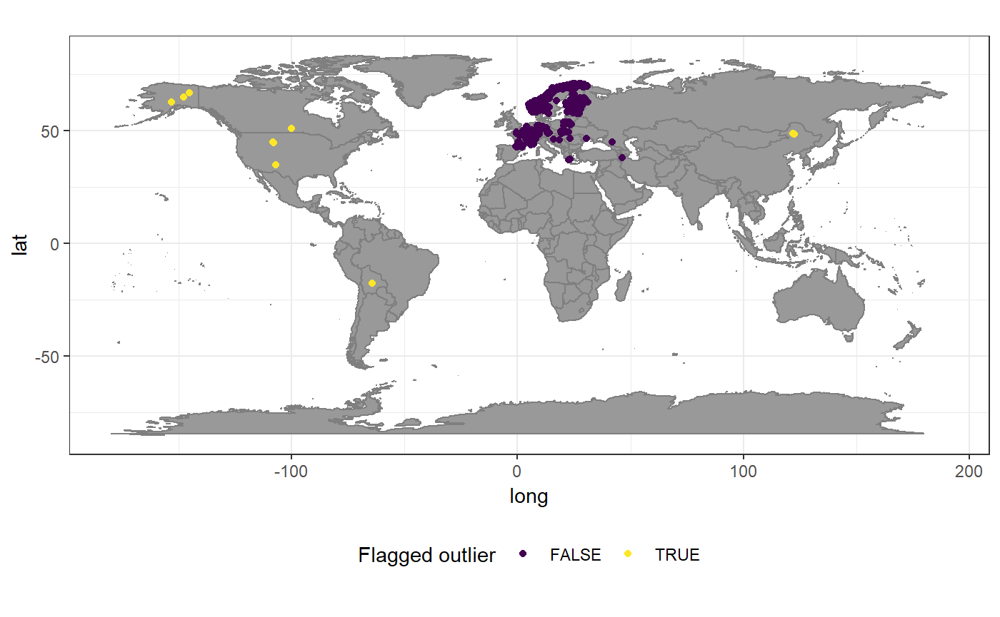
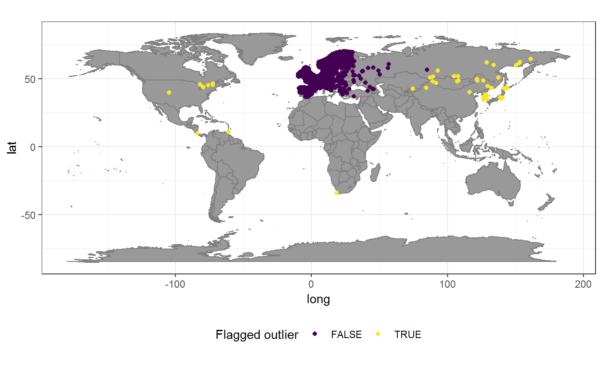
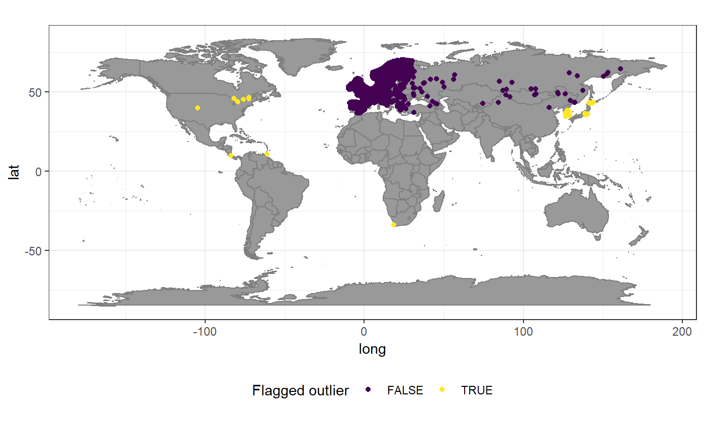
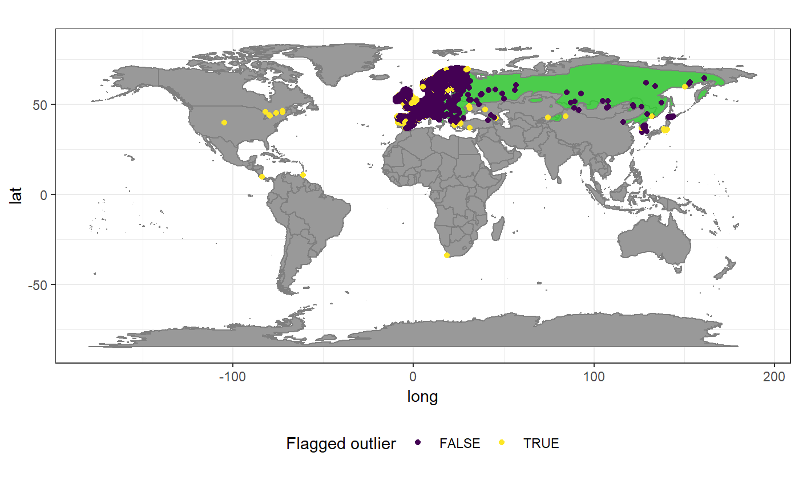
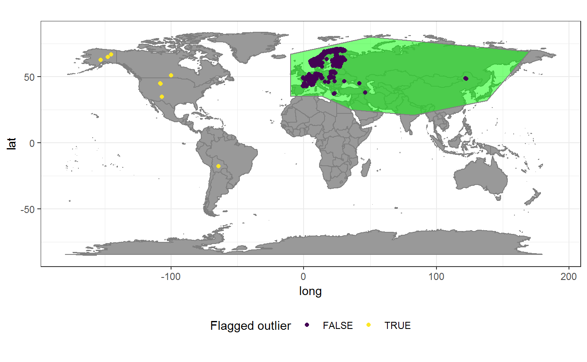

Tutorial_geographic_outliers.RmdIsolated occurrence records, distant to all other recordings of a taxon–i.e. geographic outliers–often are erroneous or problematic, because might present 1) data entry errors such as switched coordinates or switched decimal signs, 2) individuals in horticulture or captivity far from natural conditions, 3) alien records outside the natural range of the species, or 4) “freak” individuals that are remnants of historical contingencies. For many analyses such records are undesirable and need to be removed. However, the automatic treatment of such records is difficult, because records from cases 3) and 4) might be relevant for some analyses, distance-based outlier detection is a “majority vote” and hence susceptible to uneven sampling, and because some species (albeit few in our experience) might have geographically disjunct distributions (for instance on oceanic islands) prone to create false positives. Furthermore, it is generally difficult to define where a species range ends and when a record should be considered and outlier. Environmental factors can be used to inform a decision on geographic outliers, however, if records are used for environmental based distribution modelling after cleaning the is a risk of circularity.
CoordinateCleaner implements the cc_outl test to automatically flag outlier records based on geographic position by using interquartile range outlier detection (\(x > IQR(x) + Q_{75} * mltpl\)) on a distance matrix of all records of a species. In our experience this test can largely improve datasets and is unproblematic for most species, but needs more careful thought than the other tests implemented in CoordinateCleaner. The default settings of the test are conservative in flagging records, but if peripheral or satellite distributions are common in a dataset and relevant to the analyses outcome, we strongly recommend to inspect flagged records carefully.
In this tutorial we illustrate the potential and caveats of cc_outl using two boundary case examples of species with strong sampling bias– the Red squirrel and the Eurasian lynx. In the end, we present cc_iucn as an alternative for outlier detection for datasets with large ranges and strong sampling bias.
The Eurasian lynx (Lynx lynx) is a wide-spread Eurasian carnivore. The Global Biodiversity Information Facility (www.gbif.org) comprises more than 24774 records for this species, the vast majority in Europe, few records from Asia, and some records from North America and South America. While the European and Asian records correspond to the recent natural range of the species (compare for instance here), the American records are doubtful and might correspond to swapped coordinates, individuals in captivity or misidentification of the Canada lynx (Lynx canadensis). The Eurasian lynx is an extreme case for outlier detection, because it includes true erroneous outliers (in the Americas), but also very isolated but potentially valid records (in northern China). cc_outl can still help to improve the data set. Since this is a large dataset, the test will automatically use a raster-based distance approximation for the calculation of the distance matrix, as for all species with more than 10,000 records.
We will first download occurrence records for Lynx lynx from www.gbif.org using the rgbif package.
# Load data from GBIF
lnx <- rgbif::occ_search(scientificName = "Lynx lynx", limit = 200000,
hasCoordinate = T, return = "data")%>%
select(species = key, decimallongitude = decimalLongitude,
decimallatitude = decimalLatitude, countrycode)You can then run the default cc_outl test.
# Run basic coordinate cleaning
flags <- clean_coordinates(x = lnx, tests = c("capitals",
"centroids", "equal", "gbif", "institutions","seas","zeros"))
## OGR data source with driver: ESRI Shapefile
## Source: "C:\Users\az64mycy\AppData\Local\Temp\RtmpmYpeRF", layer: "ne_50m_land"
## with 1420 features
## It has 3 fields
## Integer64 fields read as strings: scalerank
lnx <- lnx[flags$.summary,]
# Default outlier detection
outl <- cc_outl(lnx, value = "flagged")
plo <- data.frame(lnx, outlier = as.factor(!outl))
# visualize occurrence records
ggplot()+
borders(fill = "grey60")+
geom_point(data = plo,
aes(x = decimallongitude, y = decimallatitude, col = outlier))+
scale_color_viridis(discrete = T, name = "Flagged outlier")+
coord_fixed()+
theme_bw()+
theme(legend.position = "bottom")The default settings of the outlier test flagged 17 outliers out of 23980 records. A comparison with the natural range of the species shows that the test performed quite well with the default settings: all American records were flagged correctly as outliers and most Eurasian records were not flagged. However there are some potential issues, since three isolated records in Asia where also flagged as potential outliers, although they likely are valid records. In this case the isolated position of those records is not an error, but probably rather due the extremely low sampling and data availability across large parts of Asia. cc_outl offers two options to improve the results 1) tweaking test sensitivity and 2) accounting for sampling intensity.
We can make the outlier detection more conservative using the mltpl argument of cc_outl. We’ll increase mltpl to 6, meaning that the mean distance of a record to all other records must be more than 6 times the interquantile range of the mean distance of all points.
outl_6 <- cc_outl(lnx, value = "flagged", mltpl = 6)
plo <- data.frame(lnx, outlier = as.factor(!outl_6))
# visualize occurrence records
ggplot()+
borders(fill = "grey60")+
geom_point(data = plo,
aes(x = decimallongitude, y = decimallatitude, col = outlier))+
scale_color_viridis(discrete = T, name = "Flagged outlier")+
coord_fixed()+
theme_bw()+
theme(legend.position = "bottom")
This improved the results and the dataset might be acceptable for most analyses. Tweaking the test sensitivity is an easy measure and only requires a general idea of how disjunct sampling in a dataset is and how important falsely flagged records (false positives for the test) compared to falsely retained records (false negatives for the test) are for downstream analyses. Only the two very isolated records in eastern Asia remain problematic. These records represent an extreme case, due to the rare combination of the extremely large distribution range of the species and the extremely sparse sampling over huge areas.
cc_outl enables to account for uneven sampling, on a country level using the sampling_thresh argument. Based on the assumption that in areas (i.e. countries) of high sampling species are more likely to be recorded and hence the distance of any correct occurrence record to the next record of the same species will be small, sampling_thresh can avoid the flagging of records from countries with very low general availability of occurrence records. If sampling_thresh is larger than zero, cc_outl uses the density of biological occurrence records available for a country from the Global Biodiversity Information Facility as proxy of sampling in this country. Based on the statistical distribution of the record density across all countries, flagged records from countries in the lower sampling_thres percentile, are never considered outliers. For instance, when sampling_thresh equals 0.25, records from the 25% least densely sampled countries cannot be flagged as outliers.
# Run outlier test
outl_samp<- cc_outl(lnx, value = "flagged", mltpl = 6, sampling_thresh = 0.25)
# visualize occurrence records
plo <- data.frame(lnx, outlier = as.factor(!outl_samp))
ggplot()+
borders(fill = "grey60")+
geom_point(data = plo,
aes(x = decimallongitude, y = decimallatitude, col = outlier))+
scale_color_viridis(discrete = T, name = "Flagged outlier")+
coord_fixed()+
theme_bw()+
theme(legend.position = "bottom")Correcting for sampling the records in Eastern China are now correctly assigned and the entire natural range of Lynx lynx is included in the dataset. However a record in Bolivia is now falsely included in the dataset. The extreme case of the lynx illustrates inherent limits of automated geographic outlier testing, since a true error (the record in Bolivia) is less distant than some of the correct records (in northern China) under similar sampling conditions.
The Red squirrel (Sciurus vulgaris) is widespread throughout Eurasia and has 214729 records in the Global Biodiversity Information Facility (www.gbif.org). The sampling in the natural range is highly clustered in Europe with few records across Asia. Additionally, the dataset includes multiple records that are likely erroneous in the Americas and South Africa. The biased sampling effort towards Europe, together with the large distribution range of the species make the use of geographic outlier detection for data cleaning challenging. Still, cc_outl can help to improve the data set. Since this is a large dataset, the test will automatically use a raster-based distance approximation for the calculation of the distance matrix, as for all species with more than 10,000 records.
Again, we will download occurrence records from www.gbif.org and then run cc_outl with default settings.
# Load data from GBIF
squ <- rgbif::occ_search(scientificName = "Lynx lynx", limit = 200000,
hasCoordinate = T, return = "data")%>%
select(species = key, decimallongitude, decimallatitude, countrycode,
hasCoordinate = T)# Run basic coordinate cleaning
flags <- clean_coordinates(x = squ, tests = c("capitals",
"centroids", "equal", "gbif", "institutions","seas","zeros"))
## OGR data source with driver: ESRI Shapefile
## Source: "C:\Users\az64mycy\AppData\Local\Temp\RtmpmYpeRF", layer: "ne_50m_land"
## with 1420 features
## It has 3 fields
## Integer64 fields read as strings: scalerank
squ <- squ[flags$.summary,]
# Default outlier detection
outl <- cc_outl(squ, value = "flagged")
plo <- data.frame(squ, outlier = as.factor(!outl))
# visualize occurrence records
ggplot()+
borders(fill = "grey60")+
geom_point(data = plo,
aes(x = decimallongitude, y = decimallatitude, col = outlier))+
scale_color_viridis(discrete = T, name = "Flagged outlier")+
coord_fixed()+
theme_bw()+
theme(legend.position = "bottom")
The default test flagged 21504 of 193225 records. A comparison with the natural range shows that all erroneous records in the Americas and South Africa where identified correctly. Unfortunately the strong sampling bias towards Europe has also let to a flagging of potentially correct East Asian records. We will again use the sampling thresh argument to address this and avoid the false flagging of records in Eastern Asia.
# Run outlier test
outl_samp<- cc_outl(squ, value = "flagged", sampling_thresh = 0.25)
# visualize occurrence records
plo <- data.frame(squ, outlier = as.factor(!outl_samp))
ggplot()+
borders(fill = "grey60")+
geom_point(data = plo,
aes(x = decimallongitude, y = decimallatitude, col = outlier))+
scale_color_viridis(discrete = T, name = "Flagged outlier")+
coord_fixed()+
theme_bw()+
theme(legend.position = "bottom")
This improved the results significantly and the cleaned dataset seems a good representation of the natural distribution of Sciurus vulgaris. However, similar to the example of the Eurasian lynx, the result is not perfect, since the records in Korea and Japan are flagged as outliers. Hence additional or alternative data cleaning methods might be necessary.
The examples above showed the potential and caveats of cc_outl. If the inclusion of all records from the natural range, also in the periphery (as for the most eastern Asian records for the squirrel) and the exclusion of all records outside there of is crucial for downstream analyses and no reasonable balance between Type I and Type II error can be found, other approaches to identify “outlier” records might be more appropriate. If additional information on species natural ranges is available, for instance from the [International Union for the Conservation of Nature] (http://www.iucnredlist.org/technical-documents/spatial-data) (as is the case for all amphibians, birds, mammals, and reptiles), you can use the cc_iucn function of CoordinateCleaner to exclude records outside this range. cc_iucn directly accepts the IUCN format:
#load the IUCN range for the Red squirrel.
#These are not provided with CoordinateCleaner and
#need to be downloaded seperately from www.iucn.org
sq_range <- readOGR(dsn = "inst", layer = "species_20025")
## OGR data source with driver: ESRI Shapefile
## Source: "C:\Users\az64mycy\Dropbox (iDiv)\research_projects\29_CoordinateCleaner\CoordinateCleaner\vignettes\inst", layer: "species_20025"
## with 2 features
## It has 22 fields
sq_range@data$species <- unique(squ$species) #replace species name by GBIF ID to synchronize betwee records and range polygon
# run natural range test
rang <- cc_iucn(x = squ, range = sq_range, value = "flagged")
# plot results
plo <- data.frame(squ, outlier = as.factor(!rang))
nat_range <- fortify(sq_range)
ggplot()+
borders(fill = "grey60")+
geom_polygon(data = nat_range, aes(x = long, y = lat, group = group), fill = "green", alpha = 0.5, col = "grey50")+
geom_point(data = plo,
aes(x = decimallongitude, y = decimallatitude, col = outlier))+
scale_color_viridis(discrete = T, name = "Flagged outlier")+
coord_fixed()+
theme_bw()+
theme(legend.position = "bottom")
If no such information is available, ranges can be generated ad-hoc. cc_iucn can be applied for multiple species, assuming a SpatialPolygonDataFrame similar in structure to the data provided by the IUCN.
# Create custom range polygon for the lynx
## define the polygon shape
lx_range <- Polygon(cbind(c(-10, -10, 50, 170, 138, 83, 36, 14, -10),
c(35, 67, 80, 69, 32, 21, 25, 35, 35)))
lx_range <- Polygons(list(lx_range), ID = c("A"))
## define projection
wgs84 <- "+proj=longlat +datum=WGS84 +no_defs +ellps=WGS84 +towgs84=0,0,0"
lx_range <- SpatialPolygons(list(lx_range), proj4string = CRS(wgs84))
## creat dataset in same format as for the quirrel; species = species name, in this case the GBIF ID
df <- data.frame(species = 2435240, row.names = "A")
lx_range <- SpatialPolygonsDataFrame(lx_range, data = as.data.frame(df))
# run natural range test
rang <- cc_iucn(x = lnx, range = lx_range, value = "flagged")
# plot results
plo <- data.frame(lnx, outlier = as.factor(!rang))
nat_range <- fortify(lx_range)
ggplot()+
borders(fill = "grey60")+
geom_polygon(data = nat_range, aes(x = long, y = lat), fill = "green", alpha = 0.5, col = "grey50")+
geom_point(data = plo,
aes(x = decimallongitude, y = decimallatitude, col = outlier))+
scale_color_viridis(discrete = T, name = "Flagged outlier")+
coord_fixed()+
theme_bw()+
theme(legend.position = "bottom")
cc_iucn supports occurrence record datasets and range polygons containing multiple species, so that for instance a set of occurrence records from all mammals can clean using the IUCN shape file containing all mammal natural ranges. IUCN and custom polygons can also be combined, if their structure is adapted
## adapt the structure of the lynx polygon
lx_range@data <- data.frame(t(rep(NA, ncol(sq_range@data))), row.names = "A")
names(lx_range@data) <- names(sq_range@data)
# Combine ranges
nat_range <- rbind(sq_range, lx_range)
# Combine records
dat <- rbind(squ, lnx)
# run natural range test
rang <- cc_iucn(x = dat, range = nat_range, value = "flagged")